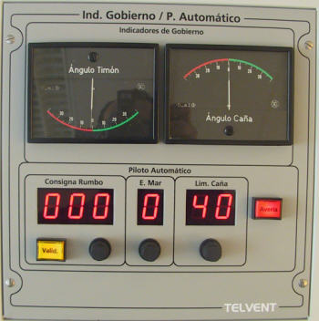

Piloto Automático
El módulo de Piloto Automático permite al operador establecer el valor de rumbo de gobierno, la limitación de caña y el valor a considerar por el piloto automático de estado de la mar. La activación del Piloto Automático se realiza desde el módulo de Control de Gobierno (ver apartado correspondiente).

Los controles e indicadores del Piloto Automático incluidos en este panel son los siguientes:
- Selector e Indicador de Rumbo Solicitado: Permite establecer el rumbo que debe mantener el buque. Para introducir el rumbo, el operador debe girar el botón selector situado bajo el indicador digital. Al girar este botón hacia la derecha, se incrementa el valor presentado en el indicador digital y al girarlo hacia la izquierda el valor disminuye, en un rango de valores de 0 a 359.
- Pulsador de Validación: Al presionar este pulsador, se establece el valor de rumbo introducido como rumbo de gobierno para el piloto automático. Siempre que el valor de rumbo seleccionado coincida con el rumbo de gobierno establecido, este pulsador permanecerá encendido de forma fija. Por el contrario, siempre que el valor seleccionado difiera del rumbo de gobierno establecido, este indicador parpadeará, indicando así que el nuevo valor está pendiente de ser aceptado.
- Selector e Indicador de Estado de la Mar: Permite establecer el funcionamiento del piloto automático en función del estado del mar. Para introducir el estado del mar, el operador debe girar el botón selector situado bajo el indicador digital. Al girar este botón hacia la derecha, se incrementa el valor presentado en el indicador digital y al girarlo hacia la izquierda el valor disminuye en un rango de valores de 0 a 9. El valor de Estado de la Mar establecido sólo tiene efecto en los buques de tres grados de libertad.
- Selector e Indicador de Limitación de Caña: Permite establecer el máximo ángulo de timón del buque durante el funcionamiento del piloto automático. Para introducir el ángulo, el operador debe girar el botón selector situado bajo el indicador digital. Al girar este botón hacia la derecha, se incrementa el valor presentado en el indicador digital y al girarlo hacia la izquierda el valor disminuye, en un rango de valores de 0 a 40.
- Indicador de Avería y Pulsador de Aceptación: Es el botón rojo situado a la derecha del panel. Cuando el instructor introduce una avería en el piloto automático, este indicador se enciende de forma intermitente. Cuando el operador lo presiona (reconociendo la avería), el indicador se ilumina de forma fija, y finalmente se apaga cuando el instructor elimina la condición de avería.